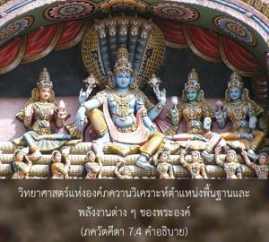
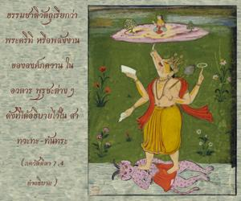
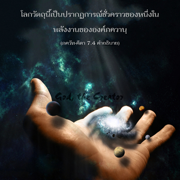
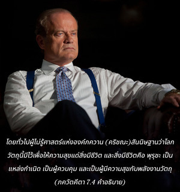
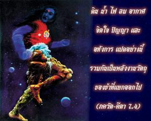

ดิน น้ำ ไฟ ลม อากาศ จิตใจ ปัญญา และอหังการแปดอย่างนี้รวมกันเป็นพลังงานวัตถุของข้าที่แยกออกไป





วิทยาศาสตร์แห่งองค์ภควานฺวิเคราะห์ตำแหน่งพื้นฐานและพลังงานต่างๆ ของพระองค์ ธรรมชาติวัตถุเรียกว่า ปฺรกฺฤติ หรือพลังงานขององค์ภควานฺในอวตาร ปุรุษ ต่างๆ ดังที่ได้อธิบายไว้ใน สาตฺวต-ตนฺตฺร ว่า
วิษฺโณสฺ ตุ ตฺรีณิ รูปาณิ
ปุรุษาขฺยานฺยฺ อโถ วิทุห์
เอกํ ตุ มหตห์ สฺรษฺฏฺฤ
ทฺวิตียํ ตฺวฺ อณฺฑ-สํสฺถิตมฺ
ตฺฤตียํ สรฺว-ภูต-สฺถํ
ตานิ ชฺญาตฺวา วิมุจฺยเต
“เพื่อการสร้างวัตถุองค์กฺฤษฺณทรงอวตารมาเป็นพระวิษณุสามองค์ องค์แรก มหา-วิษฺณุ ทรงสร้างพลังงานวัตถุทั้งหมดเรียกว่า มหตฺ-ตตฺตฺว องค์ที่สอง ครฺโภทก-ศายี วิษฺณุ ทรงเสด็จเข้าไปในจักรวาลทั้งหมดเพื่อสร้างสิ่งต่างๆ ในแต่ละจักรวาล องค์ที่สาม กฺษีโรทก-ศายี วิษฺณุ ทรงแผ่กระจายไปทั่วทุกหนทุกแห่งในรูปของอภิวิญญาณ และทรงอยู่ในมวลจักรวาลมีพระนามว่า ปรมาตฺมา ทรงประทับอยู่แม้ในปรมาณู ผู้ใดทราบถึงพระวิษณุทั้งสามองค์นี้สามารถหลุดพ้นจากพันธนาการทางวัตถุได้”
โลกวัตถุนี้เป็นปรากฏการณ์ชั่วคราวของหนึ่งในพลังงานขององค์ภควานฺ กิจกรรมทั้งหมดในโลกวัตถุกำกับโดยพระวิษณุทั้งสามองค์ ซึ่งเป็นอวตารขององค์กฺฤษฺณ ปุรุษ ทั้งสามองค์นี้เรียกว่า อวตาร โดยทั่วไปผู้ไม่รู้ศาสตร์แห่งองค์ภควานฺ (กฺฤษฺณ) สันนิษฐานว่าโลกวัตถุนี้มีไว้เพื่อให้ความสุขแด่สิ่งมีชีวิต และสิ่งมีชีวิต คือ ปุรุษ เป็นแหล่งกำเนิด เป็นผู้ควบคุม และเป็นผู้มีความสุขกับพลังงานวัตถุ ภควัท-คีตา กล่าวว่าการสรุปของผู้ไม่เชื่อในองค์ภควานฺเช่นนี้ผิด ในโศลกนี้ได้กล่าวไว้ว่าองค์กฺฤษฺณทรงเป็นแหล่งกำเนิดเดิมแท้ของปรากฏการณ์ทางวัตถุ ศฺรีมทฺ-ภาควตมฺ ได้ยืนยันไว้เช่นเดียวกันว่า ส่วนผสมผสานของปรากฏการณ์ทางวัตถุเป็นพลังงานขององค์ภควานฺที่แยกออกมา แม้แต่ พฺรหฺม-โชฺยติรฺ ซึ่งเป็นเป้าหมายสูงสุดของ มายาวาที ก็เป็นพลังงานทิพย์ที่ปรากฏอยู่ในท้องฟ้าทิพย์ ใน พฺรหฺม-โชฺยติรฺ ไม่มีความหลากหลายทิพย์อย่างเช่นที่ ไวกุณฺฐ-โลก และ มายาวาที ยอมรับ พฺรหฺม-โชฺยติรฺ นี้ว่าเป็นเป้าหมายสูงสุดนิรันดร ปรากฏการณ์ของ ปรมาตฺมา ก็เป็นรูปลักษณ์ที่แผ่กระจายไปทั่วของ กฺษีโรทก-ศายี วิษฺณุ ซึ่งไม่ถาวรปรากฏการณ์ของ ปรมาตฺมา ไม่เป็นอมตะในโลกทิพย์ ฉะนั้น สัจธรรมที่แท้จริง คือ บุคลิกภาพสูงสุดแห่งพระเจ้ากฺฤษฺณ พระองค์ทรงเป็นแหล่งกำเนิดของพลังงานที่สมบูรณ์ ทรงเป็นเจ้าของพลังงานที่แยกออกไปและพลังงานเบื้องสูง
ในพลังงานวัตถุปรากฏการณ์หลักมีอยู่แปดอย่างดังได้กล่าวมาแล้ว จากทั้งหมดนี้ ห้าอย่างแรก คือ ดิน น้ำ ไฟ ลม และอากาศเรียกว่าการสร้างที่ยิ่งใหญ่ห้าประการ หรือการสร้างที่หยาบ ภายในนี้มีอายตนะภายนอกห้าอย่างรวมอยู่ด้วย คือ ปรากฏการณ์ของเสียง สัมผัส รูป รส และกลิ่น วิทยาศาสตร์ทางวัตถุประกอบไปด้วยสิบอย่างนี้เท่านั้น ไม่มีอะไรนอกเหนือไปจากนี้ แต่อีกสามสิ่ง เช่น จิตใจ ปัญญา และอหังการนักวัตถุนิยมนั้นละเลย นักปราชญ์ที่เกี่ยวข้องกับกิจกรรมทางจิตใจก็ไม่มีความรู้ที่สมบูรณ์ เพราะไม่รู้ว่าแหล่งกำเนิดสูงสุด คือ องค์กฺฤษฺณ อหังการที่ว่า “ข้าเป็น” และ “มันเป็นของข้า” ซึ่งรวมกันเป็นหลักพื้นฐานแห่งความเป็นอยู่ทางวัตถุ รวมทั้งอวัยวะประสาทสัมผัสสิบอย่างเพื่อทำกิจกรรมทางวัตถุ ปัญญา หมายถึง การสร้างวัตถุทั้งหมดเรียกว่า มหตฺ-ตตฺตฺว ฉะนั้น จากพลังงานแปดอย่างที่แยกออกมาจากองค์ภควานฺปรากฏมาเป็นยี่สิบสี่ธาตุแห่งโลกวัตถุ ซึ่งเป็นเรื่องราวของปรัชญา สางฺขฺย ที่ไม่เชื่อในองค์ภควานฺ สิ่งเหล่านี้เดิมทีมาจากพลังงานขององค์กฺฤษฺณ และแยกออกไปจากพระองค์แต่นักปราชญ์ สางฺขฺย ผู้ไม่เชื่อในองค์ภควานฺ และด้วยความรู้น้อยจึงไม่รู้ว่าองค์กฺฤษฺณทรงเป็นต้นกำเนิดของแหล่งกำเนิดทั้งปวง เนื้อหาสาระที่สนทนากันในปรัชญา สางฺขฺย เป็นเพียงปรากฏการณ์ของพลังงานภายนอกขององค์กฺฤษฺณ ดังที่ได้อธิบายไว้ใน ภควัท-คีตา